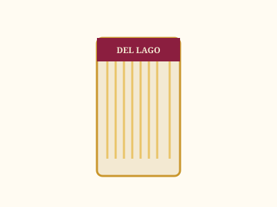

Rellenas
Ravioles de cereza y queso
Masa fina rellena con cereza patagónica y queso de campo. Nuestro clásico de temporada.
$6.200 / kgCatálogo completo
Elaboramos todo en el día, en pequeños lotes. Consultá disponibilidad de temporada para las rellenas de cereza.
Masa fina rellena con cereza patagónica y queso de campo. Nuestro clásico de temporada.
$6.200 / kg
Relleno de cordero patagónico braseado a fuego lento con hierbas de la zona.
$6.800 / kg
Receta tradicional de papa, suaves y esponjosos, listos para cualquier salsa.
$3.900 / kg
Amasados finos, ideales para salsas livianas o con manteca y hierbas patagónicas.
$4.100 / kg
Se conservan hasta 6 meses. Ideales para llevar de souvenir o pedidos a distancia.
$2.800 / paquete
Agridulce y con cuerpo, pensada para acompañar rellenas y carnes de caza menor.
$3.100 / frasco